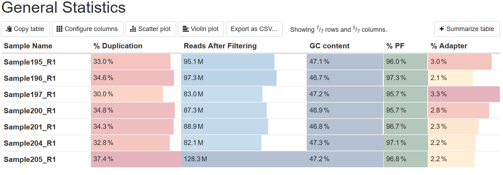
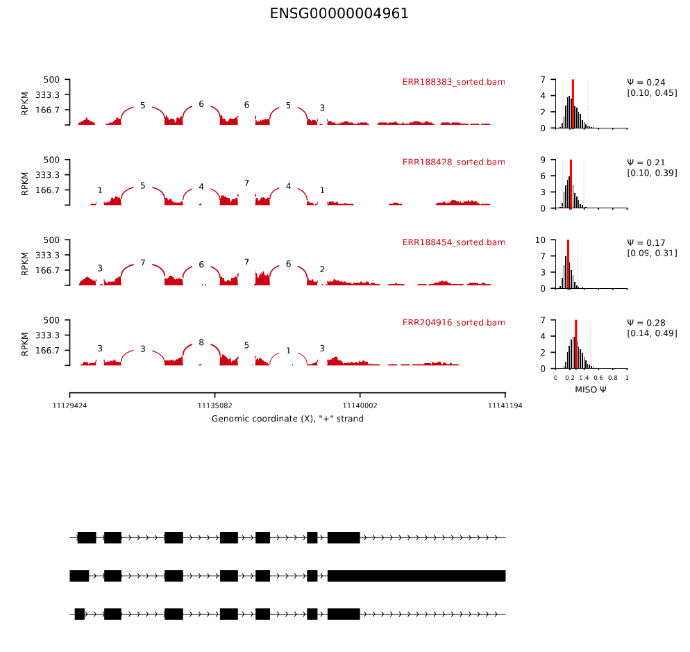

Step 1: Data Quality Control
Raw sequencing data (FASTQ files) is assessed for quality using tools like FastQC and MultiQC. This step detects issues such as adapter contamination, low-quality reads, or GC bias before continuing with further analysis.
Step 2: Trimming
Trimming removes adapter sequences and low-quality bases from reads. Trimmomatic, fastP or TrimGalore! are some of the tools used to keep only high-quality sequences, improving mapping efficiency and accuracy.


Step 3: Alignment
Cleaned reads are aligned to a reference genome. For RNAseq data, STAR and hisat2 are the most used aligners. Alignment produces BAM files, which can be used to visualize where each read maps with genome browsers like IGV. One of the possible starting points for splicing differential analysis are these BAM files, were the number of reads correspoding to different isoforms, exons or splicing events can be quantified.
Step 4: Quantification
Splicing-related quantification determines how many reads align to each feature of interest, being these features exons, isoforms or, directly, splicing events. Based on trimmed reads or alignment files, individual count matrices with the raw reads that align to each feature are generated. These matrices will be used to analize differential splicing accross conditions.
Step 4.1: Quasi-alignment
Based on the previously trimmed reads, Salmon software performs a quasi-alignment that directly quantifies the number of reads that map to each transcript.
Step 4.2: Counting aligned reads
Based on the previosly created BAM files, tools like featureCounts or HTSeq count the number of reads supporting a particular exon or transcript.
Step 5: Differential analysis
Splicing differential analysis can be based on differential exon/transcript usage or in differential splicing event identification. These different approaches will detect features with significant differences between conditions (e.g., control vs treatment).
Different tools are applied for the different feature analysis. A table showing the features, their normalized counts or base mean and statistical values is a common output of most of them. A graphical representation of these results can also be performed, as we show below.
Step 5.1: Differential exon usage (DEU).
Departing from HTSeq or featureCounts matrices, differentialy used exons between conditions are determined with tools like DEXSeq or edgeR. Output includes tables with all detected exons and their statistical values, as well as exon expression plots.
Step 5.2: Differential transcript usage (DTU).
DEXSeq is also used to compute differential transcript usage. This software analize the differentially expressed transcripts and calculates the genes which elicit significant transcript usage. Then, by using stageR R package, the transcripts of those identified by DEXSeq DTU that in fact participate in DTU will be detected.
The detected genes or transcripts with a significant alteration can be graphically represented as for differentially expressed genes or used for ORA analysis.
Step 5.3: Differential event-based.
Event-based differential splicing analysis can be computed with rMATS, SUPPA and MISO software, among others. These methods quantify splicing variation by calculating PSI (Percent Spliced In) values for each alternative splicing event. Differential splicing is then assessed based on ΔPSI (change in PSI) between conditions.
rMATS and SUPPA identify differential events by event type (e.g., exon skipping, intron retention), with SUPPA additionally linking events to their corresponding transcripts.
MISO is particularly known for its sashimi plots, graphical representations of differential splicing events that depict read coverage and splice junction usage.
